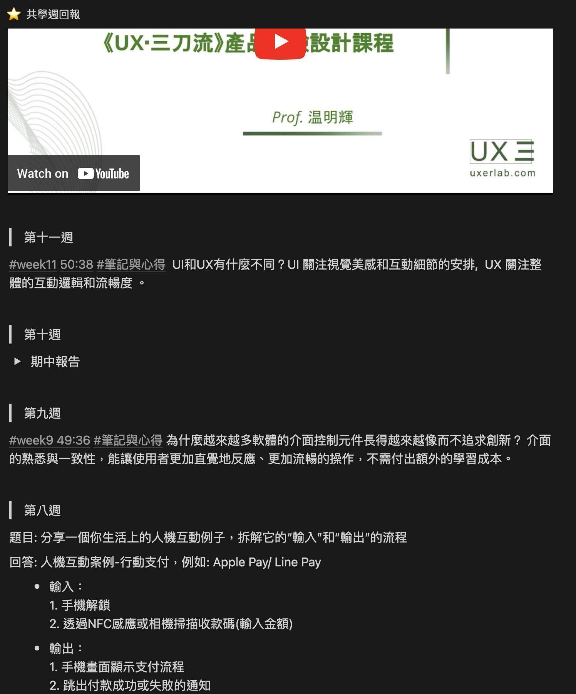

UX三刀流產品體驗設計18週共學挑戰，拓展思維邊界

18週挑戰從這裡啟程
✔ 你也好奇什麼是UI/UX嗎？
✔ 你也想了解產品設計背後的秘密嗎？
✔ 你也想提升設計思維嗎？
快一起來看看UX共學課程都在學些什麼吧!
作為一個對網頁開發充滿好奇的人，程式碼是我探索數位世界的起點。然而，隨著時間推移，我深深意識到了另一個同樣重要的層面：UI/UX產品體驗設計。在我開始學習程式碼之前，我對網頁的美觀和易用性已經有著濃厚的興趣，也一直被網站的設計所吸引，那種引人入勝的介面，以及流暢的用戶體驗，深深地吸引著我。當我開始學習HTML、CSS和JavaScript並嘗試從0畫出Wireframe時，更是意識到了解網頁邏輯以及網頁體驗是如此重要，隨著我不斷深入研究，我開始意識到UI/UX設計是網頁成功的關鍵。優秀的UI設計能夠為網站注入生命力，吸引用戶的眼球；而出色的UX設計則能夠確保用戶在網站上的舒適度和滿意度。
我開始探索色彩、排版、設計原則和使用者流程等UI/UX設計的方方面面，而在Google搜尋關鍵字的過程中看到了「UX三刀流」這組關鍵字，從好奇什麼是三刀流開始，就這樣走進了學習UI/UX的旅程，並搭上了從2023/9/11開始，為期18週線上共學計畫的列車，與業界專家、UI/UX設計師、教授、研究生、KOL及各領域的職場人士一起討論與相互學習，經由社群互動，我感受到持續的資訊衝擊和大量的知識湧入，同時拓展了思維邊界。
很開心能有機會認識這門課程，還穫得了一張NFT通行證，並幸運的碰到參與18週共學計畫的機會，更令人驚喜的是，這個計畫居然是免費而且對大眾開放的！這讓我深深感受到老師對這個領域的熱情和奉獻，雖然這門計畫的討論教材中有部分是來自我已付費購買的課程，但身為購課學員完全不會覺得權益受影響，課程的內容非常扎實，而這個計畫的發起初衷也深深感動了我。相信如果有更多人能夠了解UX這個領域，這個世界將有機會更美好。
轉眼間為期18週的計畫已進入第11週，雖然這條學習道路仍在延續，但我深信，追求完美的網頁體驗不僅僅是提升網頁質量，更是對程式語言的撰寫與創造力的發揮有所幫助。讓我們一同探索，在這個交織著技術與創意的世界中，為用戶創造更加卓越的網頁體驗吧！
共學紀錄分享

產品設計書籍推薦
📗 善用數據幫你打造好設計 ☞ 了解數據、商業和設計之間的關係。
📗 精實UX設計：帶領敏捷團隊打造出色的產品 ☞ 透過理論案例研究了解UX設計。
📗 寫給PM、RD與設計師看的設計需求分析：使用者想要的應用程式都是這樣打造出來的 ☞ 了解設計需求與不同角色的思維(已絕版可於圖書館借閱)。
UX/UI影片推薦
☞ 8分鐘弄懂UX/UI/產品設計。